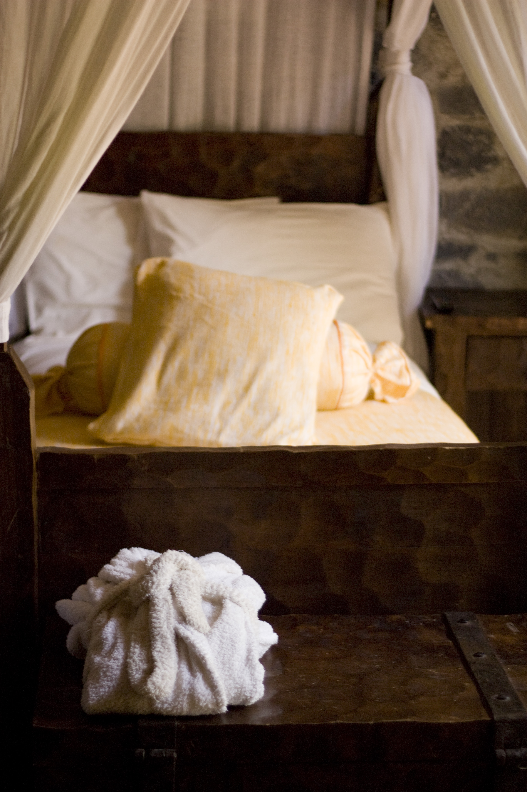
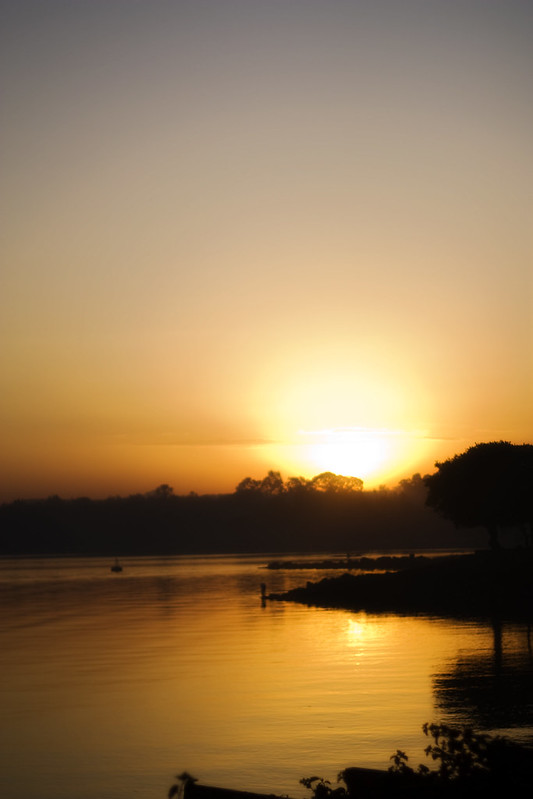
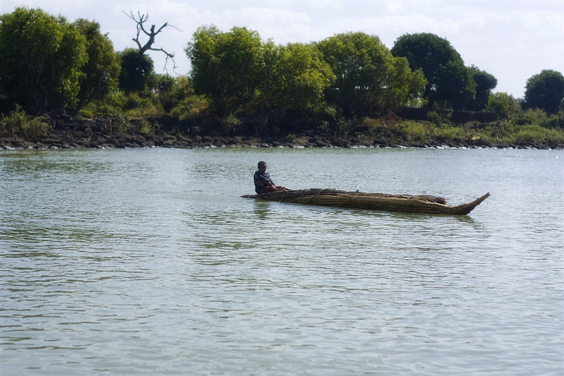
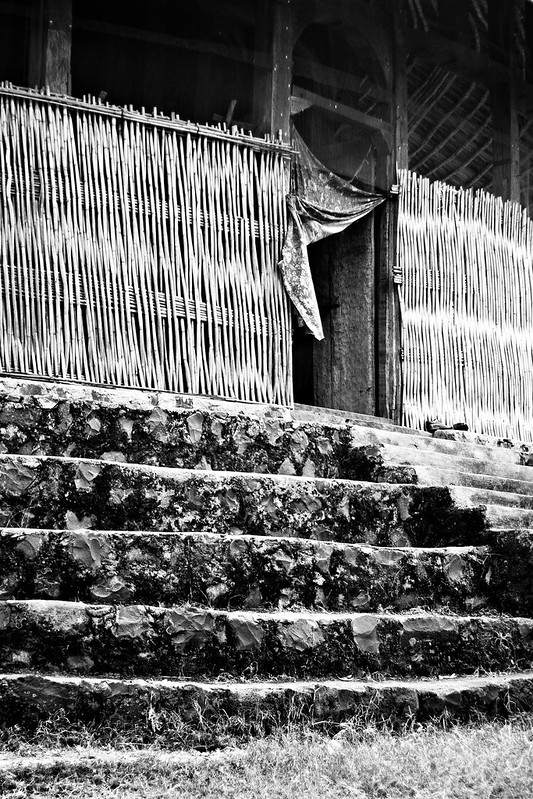
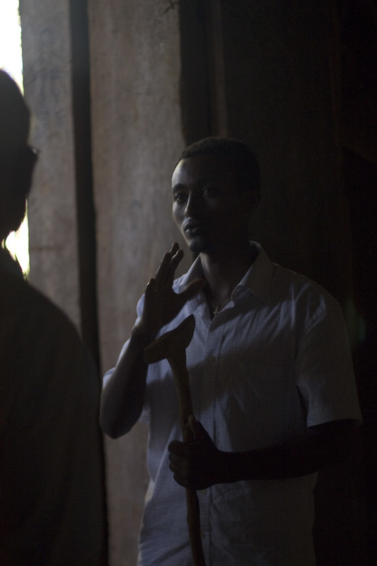
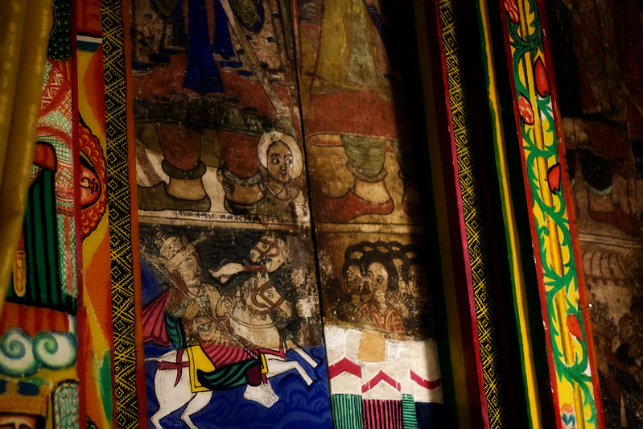

This morning we woke up early for our trip to Bahir Dar. The flight was delayed for two hours and at first we were put on the flight to Gondar before we realized we were on the wrong flight. But eventually we got on the right flight and arrived without any other problem. We took a bus to the hotel and dropped our things off. The hotel room and grounds were so beautiful! We went to lunch at a place called Sub Africa that had good sort-of American style sandwiches. The owner/manager was born in the US, but immigrated to New Zealand because he didn't agree with US politics. We had an interesting conversation and stayed a while.


Our ride on Lake Tana was beautiful, but unfortunately because we didn't arrive in the morning we missed the hippopotamuses at the mouth of the Blue Nile. The scenery was stunning. Several children came out in tankawa, or reed boats, to see us.
Then we set out on the Lake, which was much less bumpy, passing a couple of islands on the way to Zege Peninsula. Only one of the island monasteries on Dek and Daga permit women, so we passed them by. But they were beautiful.
At Zege we visted two churches: Ura Kidane MIhret built in the 16th century with 100-200 year old paintings, and Azuwa Maryam with 18th century paintings. We paid the priest a few bier to see the churches and the church treasures.
Our guide told us that the people who live on the peninsula have no electricity and live off the tourists and harvesting coffee, fruits, and vegetables. Since it's considered a sacred place they aren't allowed to grow crops.
I liked our guide. He was a nice guy, perhaps a little too taken with Kat, but very informative and willing to be flexible with our time. He was our boat driver as well and he volunteered to show us the peninsula while the rest of the guests went off on their own.


The paintings inside the churches were fascinating. Ethiopians are marjority Christian, but they belong to the Ethhiopian Orthodox church, which has its own traditions. The paintings were being restored to their original brilliant colors, which is done on a regular basis.
